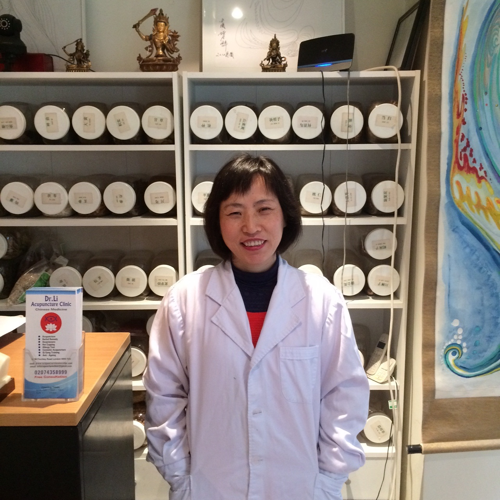
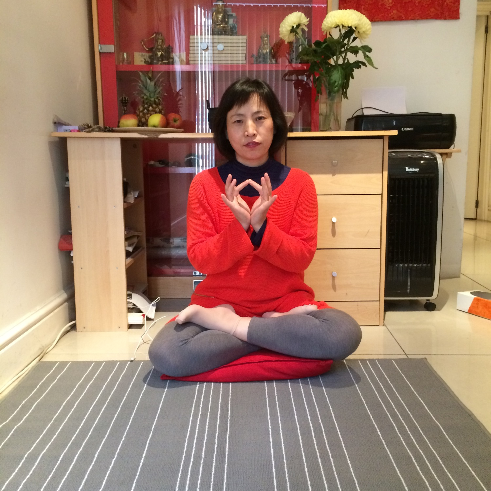

Traditional Chinese Medicine · Belsize Park, NW3
Thirty years of Chinese medicine, five minutes from Swiss Cottage.
Dr Li has treated Belsize Park and Swiss Cottage with acupuncture, Chinese herbal medicine, cupping and Gua Sha since 2010 — trained in China from 1990, practising continuously since 1995.

member
since 2005
- Since 1995 Practising as a TCM doctor and acupuncturist
- Since 2010 Running the Belsize Park clinic
- ATCM member Association of Traditional Chinese Medicine and Acupuncture, UK, since 2005
- Chengde Medical University Bachelor Degree, Chinese Medicine, 1990–1995
About Dr Li
A doctor's training, brought to Belsize Park.
Dr Li trained in Chinese Medicine at Chengde Medical University, China, then spent seven years as a TCM doctor and acupuncturist — and later a chemotherapist — at Dacheng Hospital before relocating to the UK. She practised in Sheffield from 2004, then opened her Belsize Park clinic in 2010, where she now treats hormonal imbalance, skin and nervous disorders, and joint pain using acupuncture, Chinese herbs, cupping and Gua Sha.
-
Bachelor Degree, Chinese Medicine, Chengde Medical University, China.
-
TCM doctor and acupuncturist, Dacheng Hospital, China.
-
Certificate of Chemotherapy, Tianjin Cancer Hospital; chemotherapist, Dacheng Hospital.
-
Practised at a clinic in Sheffield, England.
-
Running Dr Li Acupuncture Clinic in Belsize Park, London NW3.
In patients' own words
Results, over the years.
She suddenly developed sciatica pain relating to a slipped disc… after a week of regular treatments she abandoned the wheelchair and walked into my clinic. When she finished her one month of treatment, the pain had gone.
Dr. Li, by the Grace of God, cured me of an ailment I spent seven years trying to resolve. I became pregnant after just three months of treatment.
She has been coming to me now every week for five years and says she cannot miss a session of Gua Sha — it's the only way she can maintain her well-being.

Qigong & meditation
A daily practice, taught to patients too.
Qigong — literally "Life Energy Cultivation" — is considered the root of Traditional Chinese Medicine. Dr Li began training with a Buddhist teacher in 1990 and reached Qigong and Meditation Master status by 1995. She maintains a daily meditation practice and teaches Qigong to clients alongside acupuncture and herbal treatment.
Ask about Qigong sessionsBook your first consultation
Call, WhatsApp-free landline call, or email to arrange a time at the Belsize Park clinic — Dr Li will discuss your condition and the right treatment plan before you commit to anything.